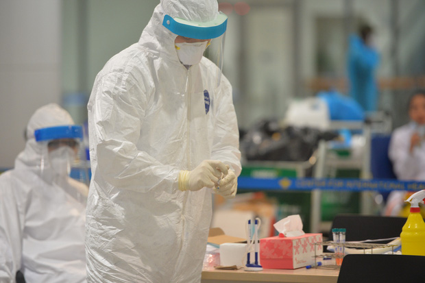

Tính đến trưa ngày 22/3, Việt Nam đã ghi nhận 94 trường hợp mắc Covid-19, trong đó 17 trường hợp đã điều trị khỏi, bao gồm 16 người của giai đoạn 1, trường hợp còn lại là bệnh nhân thứ 18 đã 3 lần xét nghiệm âm tính, không còn ho, sốt, hoàn toàn khỏe mạnh và đã được chuyển từ Bệnh viện đa khoa Ninh Bình sang Bệnh viện đa khoa Thái Bình theo dõi sức khỏe.
Về các bệnh nhân còn lại đang điều trị tại 11 cơ sở y tế, đa số tình trạng sức khỏe đều ổn định, không sốt, không ho hoặc ho ít, không khó thở, XQ phổi bình thường;
Hiện đã có 3 bệnh nhân điều trị tại Bệnh viện Nhiệt đới Trung ương có kết quả âm tính 2 lần liên tiếp. Gồm bệnh nhân thứ 17, bênh nhân thứ 24 và bênh nhân thứ 27.
Nhân viên y tế lấy mẫu tại sân bay Nội Bài ngày 18/3. Ảnh: Phương Thảo
Ngoài ra, 7 bệnh nhân khác cũng đã có kết quả âm tính lần 1.
Cụ thể, bênh nhân thứ 25 chuyển từ Lào Cai về Hà Nội, bênh nhân thứ 59 là tiếp viên hàng không của Vietnam Airlines và bênh nhân số 72, đều đang được chữa trị tại Bệnh viện Nhiệt đới Trung ương.
2 bệnh nhân nước ngoài (BN23 và 24) đang điều trị tại Bệnh viện Đà Nẵng.
Một bệnh nhân người Anh đang điều trị ở Bệnh viện Trung ương Huế cơ sở 2.
Bệnh nhân số 32 về nước bằng chuyên cơ, đang điều trị tại Bệnh viện Bệnh Nhiệt đới TP Hồ Chí Minh.
Về 2 trường hợp nặng đang điều trị tại BV Nhiệt đới Trung ương, bệnh nhân 19 - bác gái của BN 17, do tình trạng suy hô hấp tiến triển nhanh nên hội đồng chuyên môn cấp Bộ Y tế đã thống nhất chỉ định can thiệp ECMO.
Bộ Y tế đã liên tục tổ chức hội chẩn chuyên môn gồm các chuyên gia hàng đầu về hồi sức, hô hấp, tim mạch, đồng thời cũng đã thành lập tổ Hội chẩn chuyên môn gồm 30 chuyên gia đầu ngành để sẵn sàng hội chẩn, hỗ trợ chuyên môn đối với các trường hợp ca bệnh nặng.